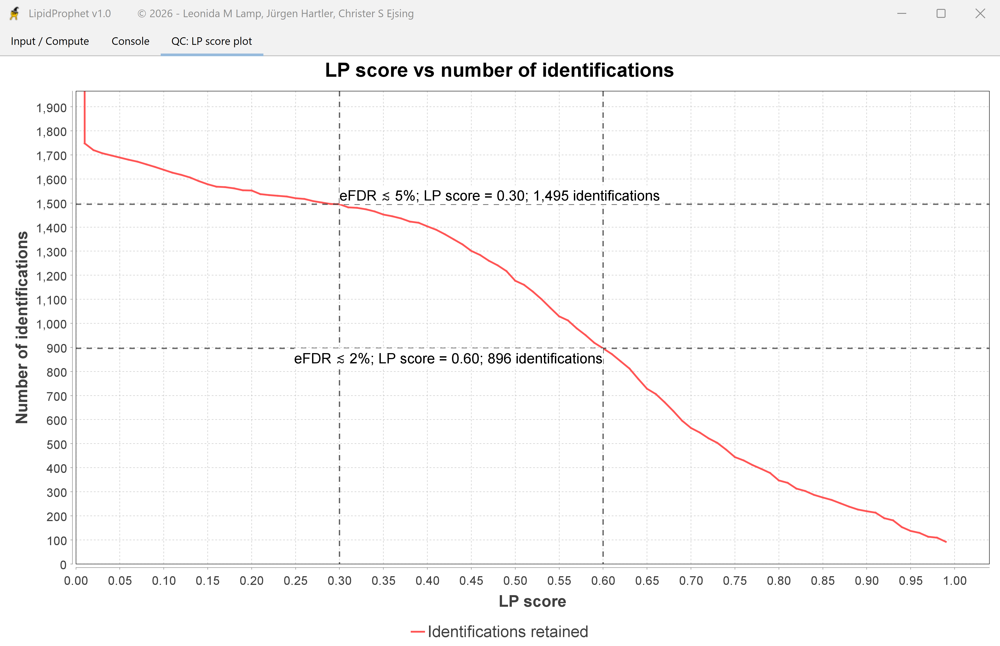

How many identifications does a cutoff retain?
After a successful run, the QC: LP score plot tab shows the LP score cutoff on the horizontal axis. The red curve shows the number of plotted identifications at or above each cutoff. Moving right asks for stronger evidence and usually retains fewer identifications.


Apply the cutoff to the exported rows
Import LipidProphet_results.tab as tab-separated text. Filter the LipidProphet score column using “greater than or equal to” and record the cutoff you chose.
The QC chart summarizes a defined set of lipid classes and polarities. The table follows the workspace’s export and grouping settings. Use the filtered rows for the list you report.
Identify the measurement and candidate
- Sample type / Acquisition group
- Labels from the sample list that identify the measurements scored together.
- Polarity / Adduct / RT group
- The ion form and, for chromatographic data, the retention-time group associated with the result.
- Lipid species / Molecular lipid species
- The sum composition and, where available, the proposed chain composition. Original search engine identification name connects the row to its upstream annotation.
What contributes to the LP score?
- Fragment match score
- How often the expected structure-specific fragments were detected across the measurements.
- Fragment probability score
- How strongly the observed fragment detections support a genuine signal under the scoring model.
- Complementarity score
- Whether the fragment evidence covers the hydrocarbon chains required for the proposed molecular species.
- Precursor probability score
- How strongly the repeated detection of the precursor supports the identification.
The four components yield an initial score. LipidProphet then checks for competing explanations of shared fragments. The final LipidProphet score ranges from 0 to 1, with higher scores indicating stronger evidence.
Inspect a competing assignment
Ambiguous partner identifies competing annotations that share evidence. Review their adducts, fragments, and retention times together. Look for fragments that distinguish the candidates.
Keep the original result table and workspace alongside any filtered list. Report whether your counts represent individual precursors or grouped molecular species. For help interpreting a score, contact Christer S. Ejsing.